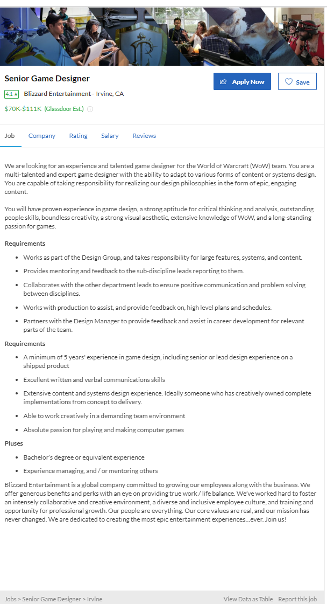

Personal Information
Name: Edmond Lam
Student Number: S3690442
I am an Australian born male with a chinese background. Coming from a family where Australian and Chinese traditions and customs are intertwined, it is safe to say that I get the best of both worlds. Being able to enjoy authentic Chinese food regularly while being able to go out and experience Australia and what it has to offer is something I appreciate constantly.
Things like being able to enjoy Chinese new year at full force, as well as being able to go to the bar on grand final day is something I cherish.
Fun fact about me is I am extremely competetive, whether it is sports or video games I will always try my hardest to win. I have a huge appreciation for being active and playing sports while also being able to enjoy video games in my free time.
Interest in IT
What is your interest in IT? When did your interest in IT start? Was there a particular event or person that sparked your interest? Outline your IT experience (if any).
My interest in IT started at a young age. As a kid I was always playing video games with my brother and dad, and of course I was super competetive with them and always wanted to win. This caused my interest in how video games are made and the process behind making them. So when I was choosing which course to study in, of course, I was going to pick IT
Why did you choose to come to RMIT?
The reason I decided to come to RMIT is the great culture and people in the study environment. I have found many of the Tutors and students within RMIT have a certain amount of 'comradery' and more often than not, everyone is willing to help and is friendly and helpful towards improving each other..
What do you expect to learn during your studies?
I expect to learn a lot about programming and coding. I can really appreciate being able to code and build applications and websites from nothing, it might not be a popular opinion, however I do see programmers and webpage designers as part time artists. I'm already learning a lot which is awesome, these are tools I will use going forward and will definitely use with my career in the future. Eventually, I want the skills to be able to design apps.
Ideal Job
Ideal Job Link - https://www.glassdoor.com.au/Job/irvine-senior-game-designer-jobs-SRCH_IL.0,6_IC1146798_KO7,27.htm?rdserp=true&jl=3127816158&jaguid=&src=GD_JOB_AD&srs=EI_JOBS&s=21&ao=331675
A description (in your own words) of the position, and particularly what makes this position appealing to you.
This is a job to work as a game developer at Blizzard to work under a game called World of Warcraft, and it's a position to work with a team of people to keep the game up to date and make ongoing changes to keep it interesting. The reason why this position is attractive to me is I am a fan of World of Warcraft and like playing the game, not only that but I'm a huge fan of blizzard. It would be a dream come true to work at a company I've been following for over a decade and to work on a game I love.
A description (in your own words) of the skills, qualifications and experience required for the position.
The skills required for this position is having experience in designing games at a minimum of 5 years, which includes having experience in senior or lead design roles. A 'shipped product' or AAA game means a game with a high budget and lots of promotion surrounding the game. As with every job they require written and verbal skills to be at an above average level, able to be flexible and work with little support or material. As well as being able to be creative in hard or demanding situations. They also included that they would prefer someone that has experience in the shooter game genre, online game genre, and experience in programming.
A description (in your own words) of the skills, qualifications and experience you currently have.
Currently, I don't have many of the required skills or qualifications required. What I can say though, is that I do have decent written and verbal skills and can be creative in situations where you wouldn't expect creativity. I do have knowledge of the MMORPG genre and what people look for and want from an MMORPG game and of course a passion for blizzard and their games.
A plan describing how you will obtain the skills, qualifications and experience required for the position, building on those you have now. This need not be greatly detailed, (and will probably change significantly over time anyway), but try to be as specific as you can.
My Plan to obtain these skills is first and foremost finishing my university degree. Along the way during my degree, I will have to be proactive in looking for projects and things to work on to improve my skills. Especially looking into game design and what may be trying to design things in my own time.